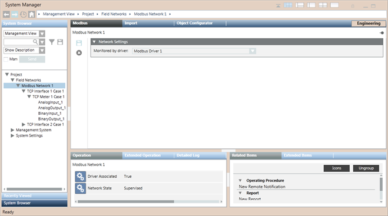

Modbus Network
In Engineering mode, after selecting a Modbus network in System Browser, you can configure its network settings using the Network Settings expander of the Modbus tab. You can only delete the Modbus network. The properties associated with the selected network display in the Operation/Extended Operation tabs.
You can set the Poll interval. The default value is 0 ms.

Modbus Toolbar | ||
Icon | Name | Description |
| Save data | Saves any changes. |
| Delete object | Deletes the current object. |


Network Settings Expander
The Network Settings expander allows you to define the Modbus driver monitoring a Modbus network.
Network Setting Expander Fields | |
| Description |
Monitored by driver | Select a Modbus driver. Once you associate a driver to a network, you cannot delete that driver. |